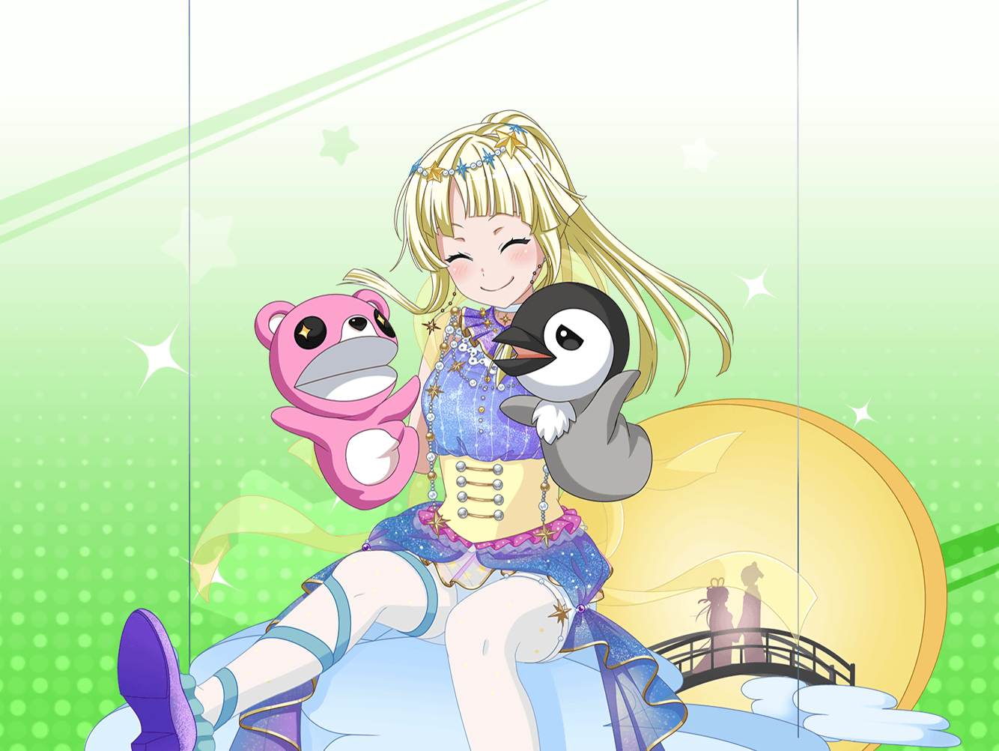

CiRCLE ロビー
こころ
こんにちは！
今度CiRCLEで人形劇をしたいのだけど、いいかしら？
まりな
きゅ、急だねこころちゃん……
でも、どうして人形劇？
こころ
この間、公民館で人形劇をしたの！
そうしたらみんな喜んでくれたから、
もっとたくさんの人に観てもらいたいって思ったのよ！
まりな
そういうことだったんだね！
うーん……ここはライブハウスだから、人形劇はちょっと……
こころ
あ、それならライブ中に人形劇のパートを
入れるというのはどうかしら！
まりな
あはは……
MCの代わりに人形劇ってこと？
……うん、それなら大丈夫かもしれないね
こころ
あっ！ そうだわ！
それならあたし達のライブと人形劇を合わせて、
ミュージカルにするのもいいわね！
こころ
あたし達の演奏で、人形が踊ったりしたら、
とっても楽しいと思うわ！
まりな
人形を使って、ミュージカルかあ……
……うん。
なかなか面白いかもしれない
まりな
あっ、でも、それだと、みんな演奏してるから、
人形を操る人がいないんじゃない？
こころ
それもそうね！
だったら、それは美咲にやってもらおうかしら！
まりな
そ、それも難しいかもしれないよ？
ほら、美咲ちゃん一人じゃ、
たくさんの人形をいっぺんに動かせないかもしれないし
こころ
それなら、人形劇を手伝ってくれるかしら！？
まりな
えっ！？ わ、私達！？
まりな
私は人形劇とか、やったことないんだけど……
キミは、ある？
こころ
やったことがあるかどうかなんて、関係ないんじゃないかしら？
だって今から練習したら、できるようになるもの！
こころ
それじゃあ、次の練習の時には、
人形を持ってくるわね！ 今から、とっても楽しみ！
まりな
……なんか、やらないとダメな流れだね、これ
こころ
それじゃあ、決まりね！
みんなを笑顔にするために、一緒に頑張りましょう！